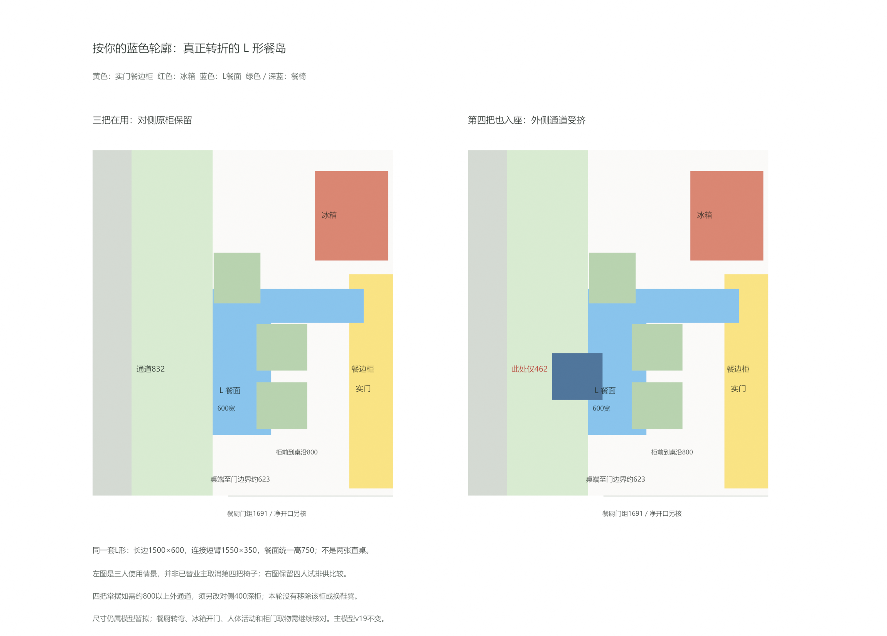
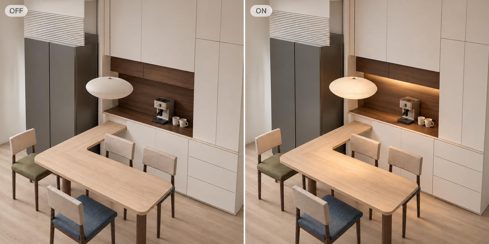
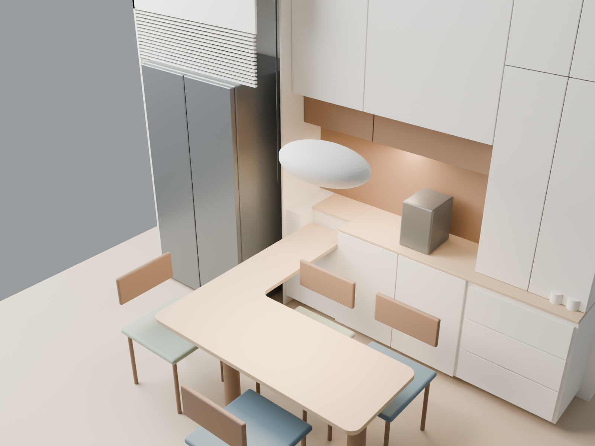

后续已确认：三把常用，第四把备用，优先保留通道。本页是选择前的历史对照；查看最新三椅默认方案。
独立布局试排06 · 2026-11-05
按你的蓝色轮廓，餐面本身转成L形
黄色墙段放实门餐边柜，冰箱在上端红框；餐面从柜段向左伸出，再沿餐厅向下转折。沿用暖白、浅木、胡桃木及绿蓝织物，不采用玻璃展示门。未选定A/B/C，未融合主模型，也未启动v20。
先看真实尺寸和使用情景

两图都保留对侧400深原柜及换鞋区。左图是三把使用情景；右图把第四把放在餐面外侧，保留四人试排。没有替业主决定取消第四把。
| 餐边柜 | 真正柜段2200宽，下柜450深、台面高880，上柜350深；夹层薄柜220深，四段式和三横抽保留。柜体实门封闭，工作壁龛开放。 |
|---|---|
| 冰箱 | 靠客厅端1200占位区；机身暂按920×750×1850。位于L形之外，右侧封板退至450深，实际开门、抽屉和散热按最终型号核对。 |
| L形餐面 | 长边1500×600，连接短臂1550×350；二者有350×600重合，不是相加成两张桌。餐面统一高750、厚30、圆角先按R60。短臂150插入柜体连接，形成从880台面下接出的130高差。 |
| 椅位 | 转角端一把、长边内侧两把；第四把在长边外侧错位入座。完整520深×480宽的椅子占位，未靠缩小椅子制造余量。 |
| 柜前到餐面 | 内侧桌沿到下柜前缘800。内侧椅背到柜前坐姿约430，额外拉250后约180；该位置不是独立通道，取物与拉椅需错开。 |
| 主通道 | 三把使用时约832；第四把外侧入座后约462，再拉250后约212。四人状态下，不能把外侧当作正常连续通道。 |
| 餐厨门前 | L形自由端至门边界约622.5，转弯偏紧。原门组1691不等于净开口，当前主模型门仍关闭，本试排不冒称已验证开启后通行。 |
取舍：这个L形作为家具放得下，但保持对侧原柜时，四把永久摆放会挤占入户—客厅的主要路线，600宽餐面在临时对坐时也更紧。设计师备选为三把常用、第四把来客时加；此项尚未得到业主选择。
若四把必须常摆，需要另行协调对侧柜：对应一段400深柜完全退让到墙面，在第四把坐姿后该处可由462增加到862；这是几何方向提示，不能只画一小缺口就当作动线已解决，也没有在本轮移除柜子或换鞋凳。
外观与开关灯概念

左人工灯全关、右全开，日光保留。图片用于理解外观和光影，不用于量尺寸或证明通道宽度。四椅是紧凑使用试排，图中未展示全屋对侧柜的完整关系，具体挤占看上面的尺寸平面。
暖白哑光实门＋胡桃木翻门薄柜与壁龛＋浅木圆角L餐面。灯光保留薄柜底工作光和餐吊灯；实门柜关闭时不透光。原参考图中的玻璃门被业主最新要求覆盖。
查看生成前的实体关系图

图纸来源与文件
本轮轮廓依据用户最新批注，尺寸依据v19中3082横向与3545柜墙暂拟值，不从批注照片的像素换算实测尺寸。主模型28件家具位置、门窗与VR保持原样。

布局参数及已知限制 · 实际提示词与参考输入 · 可编辑独立模型
此为独立设计探索，不替业主选择座位模式。冰箱型号、机门轨迹、真实净高与宽度、人体活动和下柜开启均待下一步选型核对。原01–05方案保留作为过程记录。